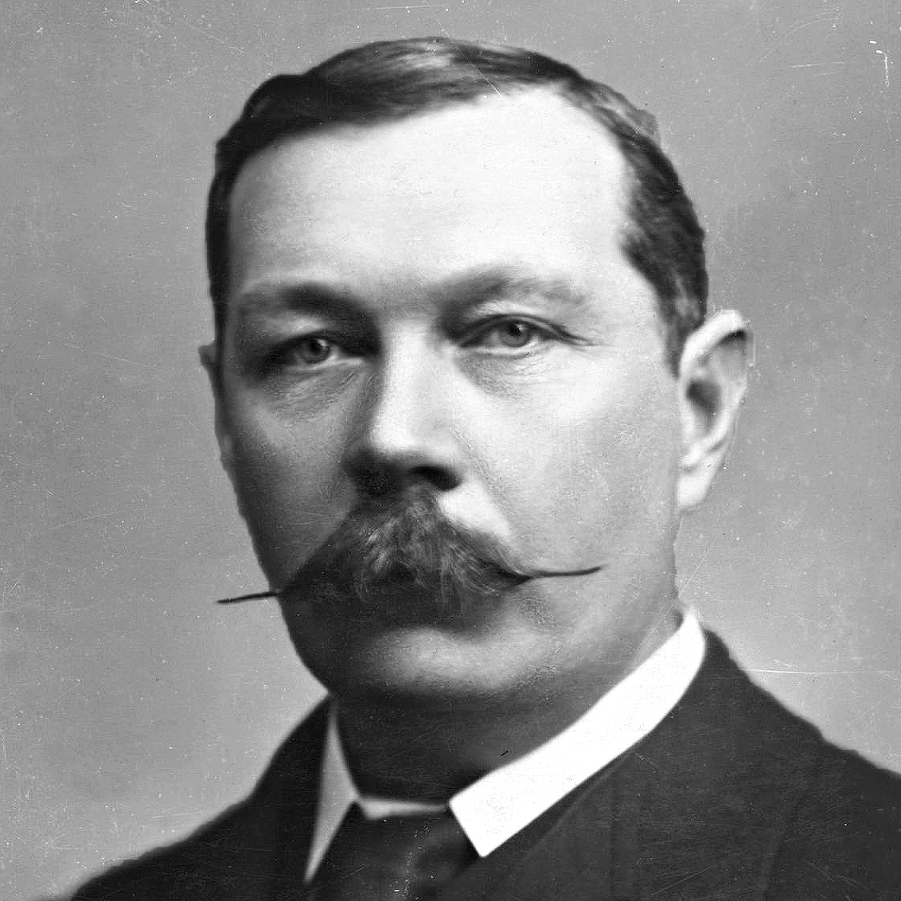

El mundo está lleno de cosas obvias, que nadie por casualidad alguna vez observa
Sherlock Holmes es un detective ficticio de finales del siglo XIX e inicios del XX; que
apareció por primera vez en una publicación de 1887. Fue ideado por el autor y médico
escocés Sir Arthur Conan Doyle.
Siendo un brillante detective londinense, Holmes es famoso por su destreza en el uso de la lógica y la astuta
observación que tiene para resolver los casos. Es quizá el detective ficticio más famoso, al punto
de que existen personas que creen que se trata de un personaje que existió realmente.
Es uno de los personajes literarios más conocidos y universalmente aceptados.
En la primera novela, "Estudio en escarlata", se dan a conocer datos sobre Holmes.
Nació en Inglaterra en el año 1854.
No se sabe mucho sobre su familia, salvo que es nieto
de una artista francesa. También se sabe que en su juventud acudió a una de las
universidades del país.
Tiene un hermano mayor, Mycroft, a quien Holmes considera más
inteligente que él mismo.
A la edad de 20, Holmes encontró su vocación, y fue cuando empezó su carrera como el primer
detective asesor del mundo, y tuvo su primer caso que compartió con Watson.
Su estudio de la ciencia en la universidad le formó y preparó su mente y sus poderes
de observación, que Holmes emplea para el razonamiento deductivo en su trabajo con gran éxito.
Las técnicas de Holmes podrían considerarse, por aquel entonces, como precursoras de las ciencias forenses modernas:
Sir Arthur Ignatius Conan Doyle (Edimburgo, Reino Unido, 22 de mayo de 1859 - Sussex, 7 de julio de 1930 ) fue un médico y escritor escocés, creador del célebre detective de ficción Sherlock Holmes. Fue un autor prolífico cuya obra incluye relatos de ciencia ficción, novela histórica, teatro y poesía.
Arthur Conan Doyle creó al doctor Watson, un médico leal pero intelectualmente torpe que acompaña a Sherlock y escribe sus aventuras. En julio de 1891 empezó a publicar en la revista Strand Magazine las andanzas de su personaje, inspirado parcialmente en uno de sus profesores de la universidad, que abogaba por seguir estrictos razonamientos deductivos en todos los órdenes de la vida.
| Nombre del Libro | Tipo de publicación | Año |
|---|---|---|
| Estudio en Escarlata | Novela | 1887 |
| El signo de los cuatro | Novela | 1890 |
| Las aventuras de Sherlock Holmes | Relatos | 1892 |
| Las memorias de Sherlock Holmes | Relatos | 1894 |
| El sabueso de los Baskerville | Novela | 1902 |
| El regreso de Sherlock Holmes | Relatos | 1905 |
| El Valle del terror | Novela | 1915 |
| El último saludo de Sherlock Holmes | Relatos | 1917 |
| El archivo de Sherlock Holmes | Relatos | 1927 |